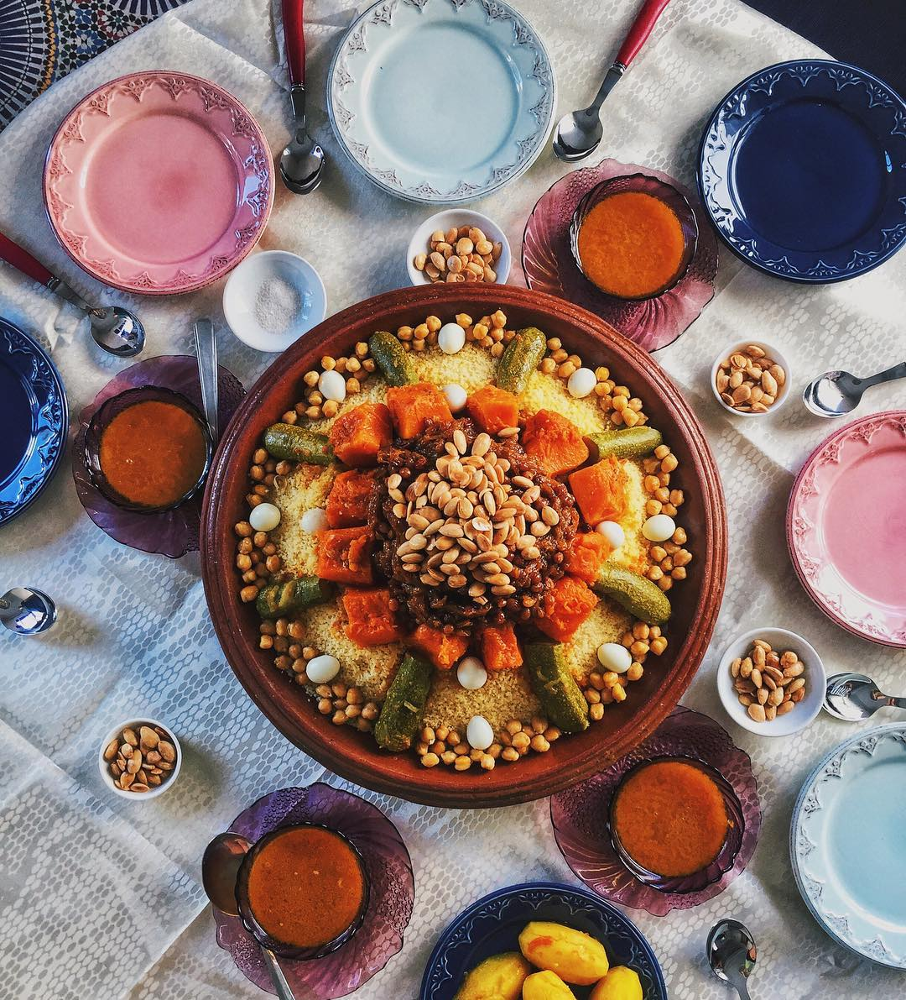

couscous

description
Couscous is a traditional North African dish made from steamed semolina wheat granules. It’s light, fluffy, and often served with vegetables, meat, or broth.
Ingredients
- 1 cup couscous
- 1 cup water
- 1 tbsp olive oil or butter
- Pinch of salt
Steps
- Boil water with salt and olive oil or butter.
- Add couscous, stir quickly, then cover and remove from heat.
- Let it sit for 5 minutes to absorb the water.
- Fluff with a fork before serving.
Home